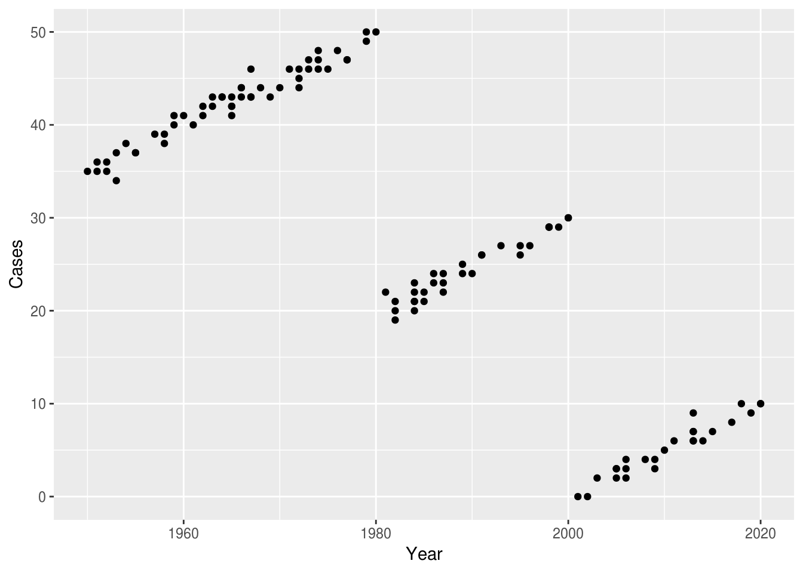
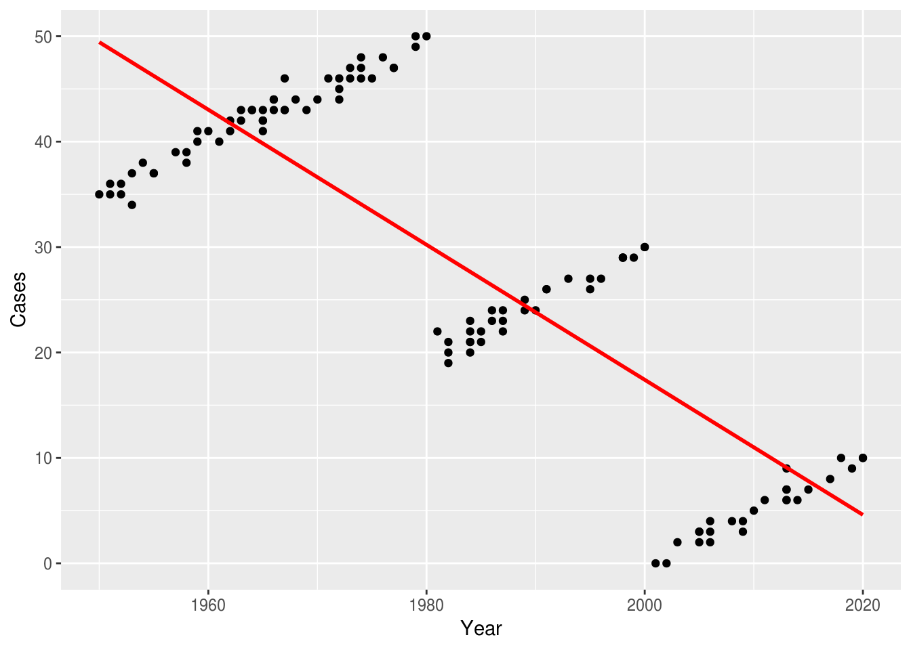
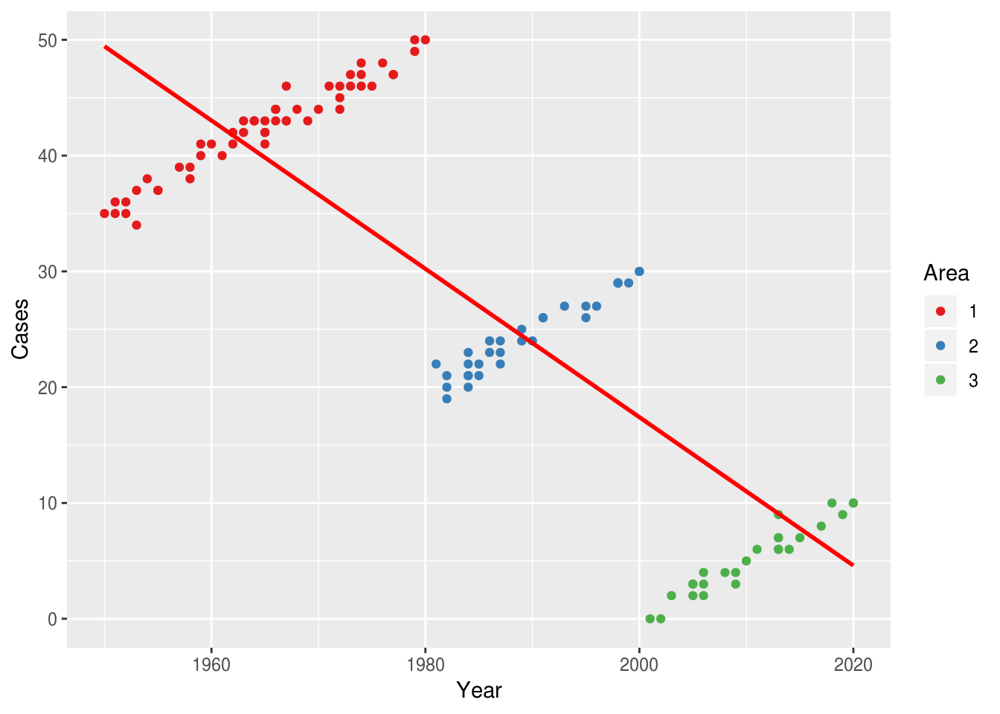
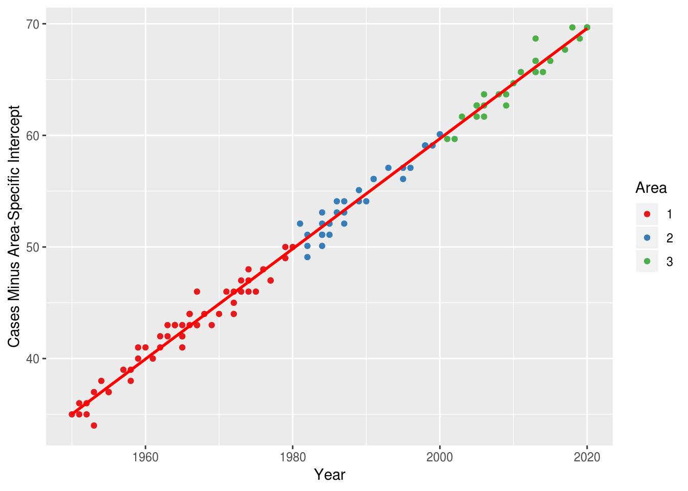

3 Panel data - Multiple Areas
3.1 Aim
We are given a dataset containing yearly counts of diseases from multiple geographical areas.
We will explore how this is different from the one area case.
For this section, we will use linear regression to make the calculations easier to work with, but the principle is the same as with poisson and negative binomial regression.
3.2 Creating the data
library(data.table)
library(lme4)## Loading required package: Matrixlibrary(ggplot2)
set.seed(4)
fylkeIntercepts <- data.table(fylke=1:3,fylkeIntercepts=c(30,0,-30))
d <- data.table(fylke=rep(1:3,each=100))
d <- merge(d,fylkeIntercepts,by="fylke")
d[,mainIntercept:=5]
d[,x:=runif(.N)]
d[,year:=sample(c(1950:2020),.N,replace=T)]
d[,yearMinus1950:=year-1950]
d[,mu := mainIntercept + fylkeIntercepts + 0.5*yearMinus1950]
d[,y:=round(rnorm(.N,mu,sd=1))]
#d[,y:=rpois(.N,mu)]
d[fylke==1 & !year %in% c(1950:1980),y:=NA]
d[fylke==2 & !year %in% c(1980:2000),y:=NA]
d[fylke==3 & !year %in% c(2000:2020),y:=NA]
d <- na.omit(d)3.3 Investigating the data
We begin by blindly looking at the data.
q <- ggplot(d,aes(x=year,y=y))
q <- q + geom_point()
q <- q + scale_x_continuous("Year")
q <- q + scale_y_continuous("Cases")
q
We then blindly run a linear regression and we see that the number of cases is decreasing over time.
q <- ggplot(d,aes(x=year,y=y))
q <- q + geom_point()
q <- q + stat_smooth(method="lm",se=F,colour="red")
q <- q + scale_x_continuous("Year")
q <- q + scale_y_continuous("Cases")
q
However, once we reveal the geographical clustering in the data, we can see that our regression model is extremely wrong:
q <- ggplot(d,aes(x=year,y=y))
q <- q + geom_point(mapping=aes(colour=as.factor(fylke)))
q <- q + stat_smooth(method="lm",se=F,colour="red")
q <- q + scale_x_continuous("Year")
q <- q + scale_y_continuous("Cases")
q <- q + scale_colour_brewer("Area",palette="Set1")
q
3.4 Time Trend Within Geographical Areas
What we actually want to do, is observe the time trends within each geographical area:
fit <- lm(y~as.factor(fylke) + yearMinus1950,data=d)
d[,p:=predict(fit,newdata=d)]
q <- ggplot(d,aes(x=year,y=y))
q <- q + geom_point(mapping=aes(colour=as.factor(fylke)))
q <- q + geom_line(mapping=aes(y=p,group=as.factor(fylke)),colour="red")
q <- q + scale_x_continuous("Year")
q <- q + scale_y_continuous("Cases")
q <- q + scale_colour_brewer("Area",palette="Set1")
qSo how do we achieve this? Basically, by identifying how the areas differ from each other, and then raising/lowering each area as appropriate. The amount that each area differs from the global average is called the area-specific intercept.
Once we have removed the area-specific intercept from each geographical area, we can (basically) just run a normal regression to find the overall time trend.
d[,yMinusIntercept:=y]
d[fylke==2,yMinusIntercept:=y--30.0944]
d[fylke==3,yMinusIntercept:=y--59.6795]
q <- ggplot(d,aes(x=year,y=yMinusIntercept))
q <- q + geom_point(mapping=aes(colour=as.factor(fylke)))
q <- q + stat_smooth(method="lm",se=F,colour="red")
q <- q + scale_x_continuous("Year")
q <- q + scale_y_continuous("Cases Minus Area-Specific Intercept")
q <- q + scale_colour_brewer("Area",palette="Set1")
q
3.5 Applying The Regression Models
blah blah